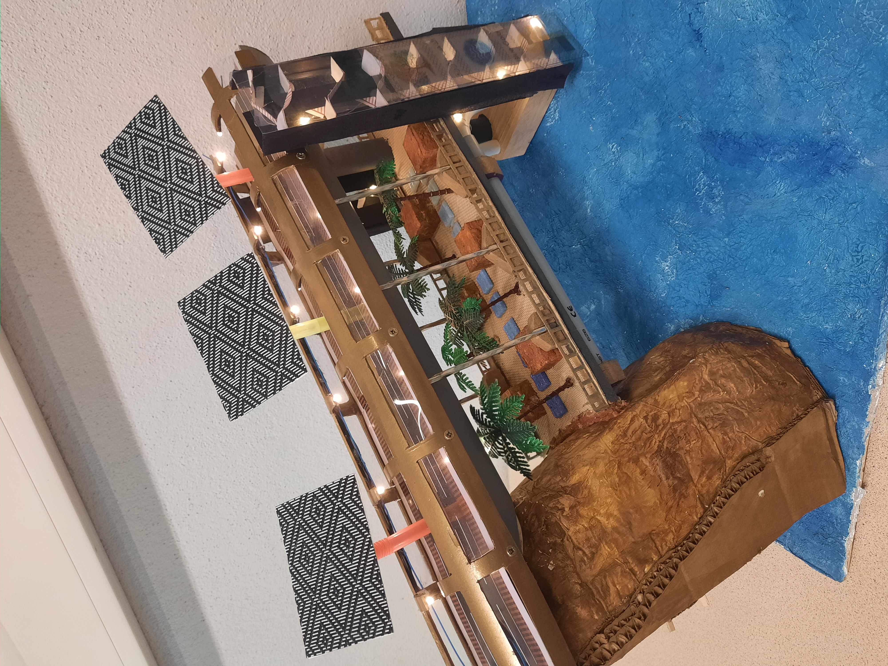

Le Blue Gold un projet futuriste et innovant

Le Blue Gold, en français "l'or bleu", est un pont durable puisqu’il est presque auto-suffisant. Le mot or représente la couleur sable et bleu représente la mer. C’est un pont futuriste qui allie désalinisation de l’eau et production d’énergie à l’aide de panneaux solaires, ce qui réduit son impact sur le réchauffement climatique.
Une présentation un peu spéciale
Nous vous présentons notre projet d'une tout autre manière : par l’écriture d’un texte. Nous avons écrit un triple portrait afin de retracer l'évolution complète de la construction du pont tel un vrai chantier.
À propos
Notre pont sera installé entre l’Erythrée et le Yémen.